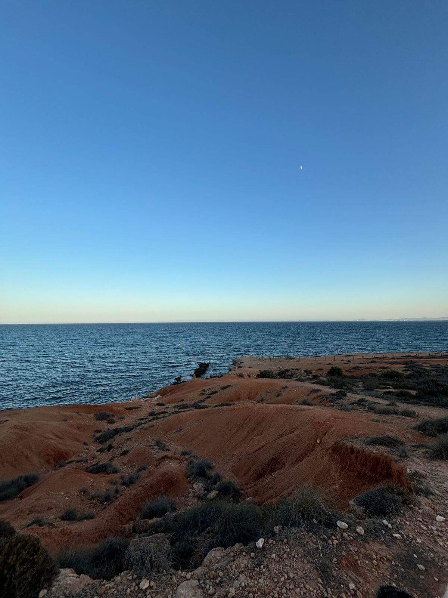
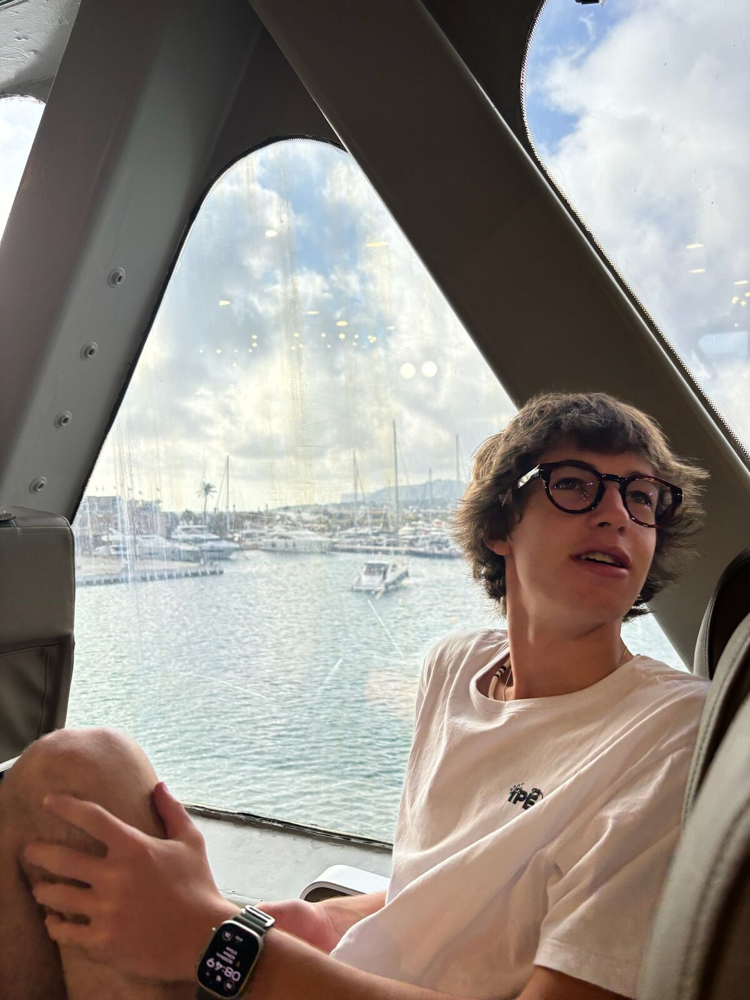
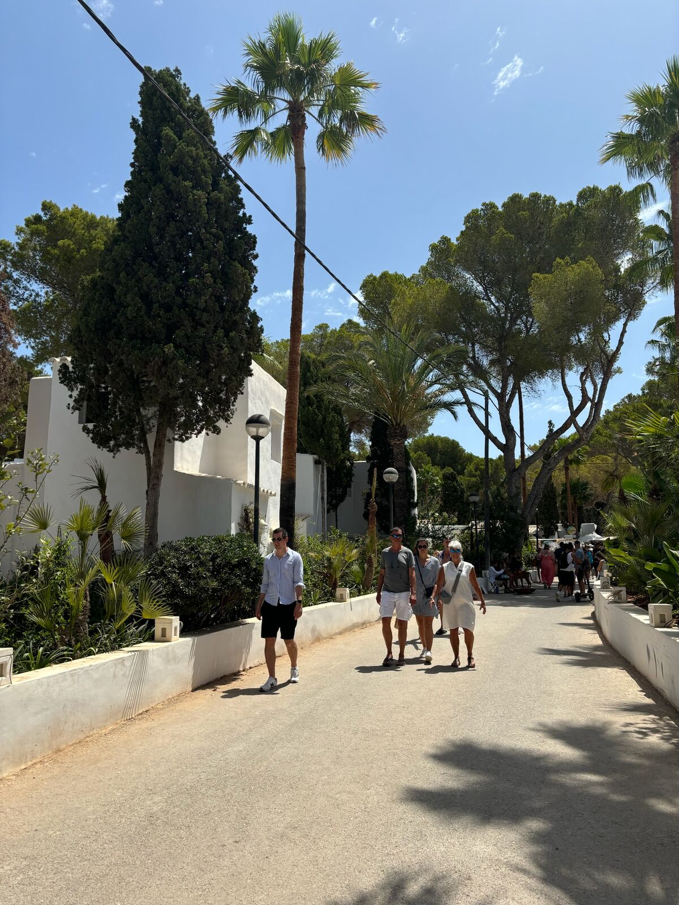
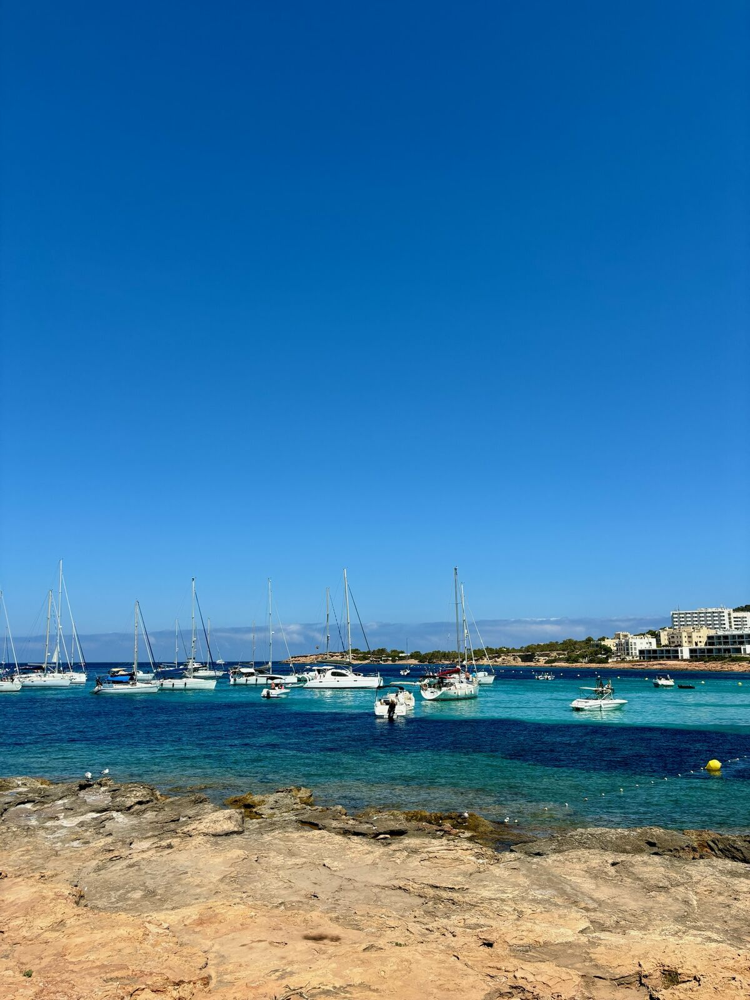
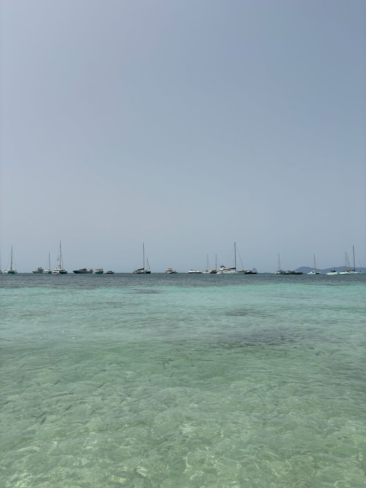
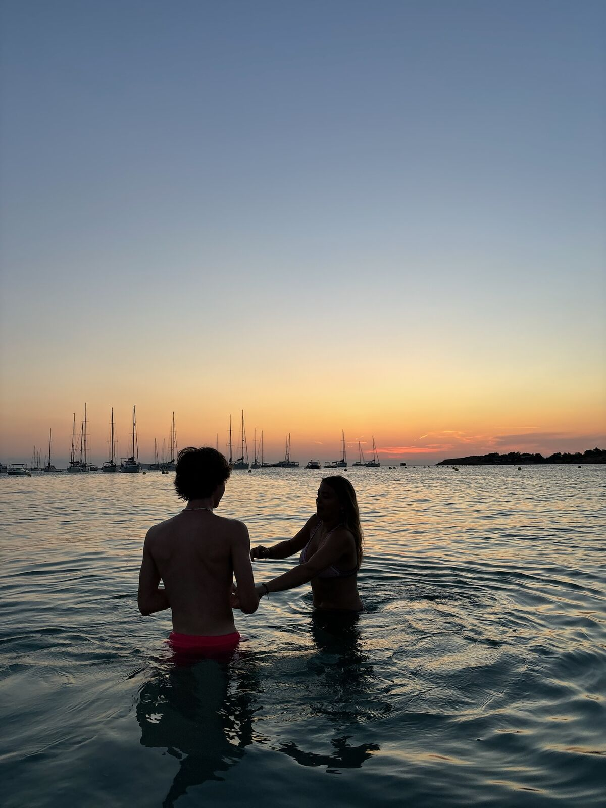
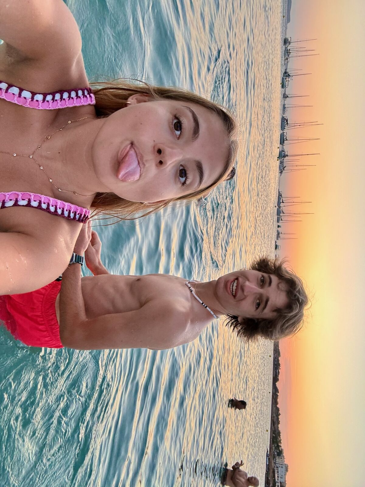

Arrivée entre mer, promenade et premières découvertes
Notre séjour à Ibiza a commencé tôt le matin, avec le ferry pris à Dénia en direction des Baléares, cette fois avec la voiture. C'était une solution vraiment pratique, surtout pour pouvoir profiter librement de l'île une fois sur place. On avait choisi de partir assez tôt pour ne pas perdre de temps et pouvoir déjà savourer cette première journée au maximum.
À notre arrivée, on a commencé par découvrir les alentours de Sant Antoni de Portmany, tout près de notre appartement El Moro. L'ambiance y était déjà très agréable, avec ce mélange de soleil, de douceur et de bord de mer qui donne immédiatement cette sensation d'être en vacances.


On a aussi pris le temps de profiter de la plage près de notre appartement, un vrai plaisir pour commencer ce petit voyage. Pouvoir se poser près de l'eau dès le premier jour, sentir l'air marin et simplement savourer l'instant, c'est exactement le genre de moment qui met tout de suite dans l'ambiance d'Ibiza.
Plus tard dans la journée, on est allés se promener à Eivissa, avec l'envie de découvrir un peu la ville, flâner dans les rues et faire quelques boutiques. Entre les petites balades, les commerces et l'ambiance vivante de la ville, cette première journée nous a permis de découvrir une autre facette de l'île.
Une belle entrée en matière pour commencer ce séjour à Ibiza dans une ambiance à la fois détendue et ensoleillée.
Marché hippie, plage et soirée inoubliable à Ushuaïa
Pour cette deuxième journée, on a commencé la matinée dans une ambiance complètement différente en allant découvrir le marché hippie de Punta Arabí. Une atmosphère très vivante, beaucoup de stands, de couleurs, et ce petit côté bohème qui correspond parfaitement à l'image qu'on peut avoir d'Ibiza.

À midi, on a décidé de manger sur place, ce qui était très pratique puisqu'il y avait plusieurs food trucks. Ensuite, on est retournés profiter de la plage juste devant l'hôtel — après l'animation du marché, c'était agréable de retrouver un moment plus calme au bord de l'eau.
En fin d'après-midi, on est rentrés se préparer, parce que la soirée s'annonçait comme l'un des grands moments du séjour. À 18 heures, on partait pour Ushuaïa afin d'assister à Lost Frequencies, Dimitri Vegas et Like Mike. Et franchement, c'était tout simplement incroyable. L'ambiance, la musique, l'énergie du lieu, le cadre… tout était réuni pour passer une soirée totalement folle.
Bon, il faut quand même le dire : les prix sur place sont élevés. Payer 10 euros pour une petite bouteille d'eau, c'est exagéré. Mais malgré ça, la soirée restait tellement impressionnante que ça n'a pas gâché l'expérience.
Entre l'ambiance détendue du marché hippie et cette soirée complètement folle à Ushuaïa, cette deuxième journée nous a fait vivre deux facettes très différentes d'Ibiza.
Formentera, une parenthèse paradisiaque avant le retour
Pour ce troisième jour, on a décidé de prendre un ferry vers Formentera avant de reprendre la route vers Torrevieja. Et franchement, c'était une magnifique idée pour terminer ce petit séjour en beauté. Dès notre arrivée, on a tout de suite été frappés par la beauté de l'endroit : une eau d'une transparence incroyable, avec des couleurs superbes qui donnent presque l'impression d'être dans un décor de carte postale.


Sur place, on s'est déplacés à pied, ce qui permet de découvrir l'île encore plus tranquillement et de profiter pleinement de l'ambiance. Tout paraît plus calme, plus doux, presque hors du temps.


Après cette très belle parenthèse à Formentera, on a repris le ferry retour vers Ibiza pour récupérer la voiture, puis enchaîné avec le deuxième ferry en direction de Dénia. Une journée un peu plus tournée vers le retour, mais avec un dernier décor exceptionnel pour finir le voyage de la plus belle des façons.